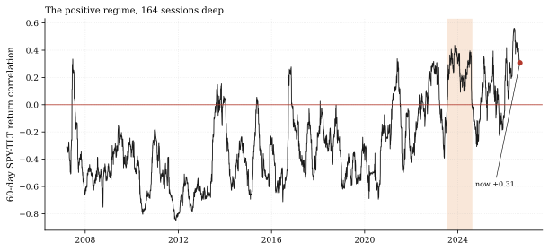
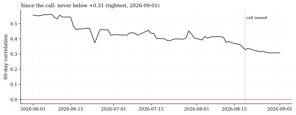
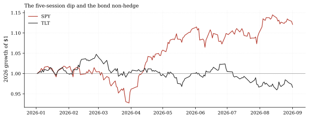

The one-paragraph version. Rates & Credit Watch returns to its standing call (rates-corr-below-zero: the 60-day SPY-TLT correlation prints below zero before the positive spell ties the record) with the first genuinely two-sided reading. The correlation stands at +0.31 - the LOWEST print since the call was issued (its window minimum, set on Tuesday's close) and down from +0.33 at the last issue - while the streak reaches 164 sessions (238 calendar days inclusive), 102 short of the record 266 (386 days). But the number that settles the month's argument is the tape itself: over the five sessions of the equity dip, SPY fell 0.54% while TLT fell 1.92% - bonds did not cushion the drawdown, they amplified it. The 126-day window (+0.44) says the regime is intact; the call's own 60-day window is, for the first time, drifting toward the line instead of away from it.
How we worked this problem
Issue 3 re-runs the grader-identical correlation series - window and pair read from the call's own registry entry, not hardcoded - on the panel through Tuesday September 1, and adds the drawdown framing the prior issues lacked: with equities taking their first multi-session dip since the call issued, the hedge question stopped being theoretical. Cross-issue baselines (correlation +0.33 on the August 21 panel, streak 157 sessions at issue 2) are loaded from that note's published artifact, so every then-versus-now comparison is artifact-to-artifact.
The data audit
| Source | Coverage | As-of | Role |
|---|---|---|---|
data/cache_panel_2007_2026.parquet | SPY/TLT daily closes, 2007-2026 | 2026-09-01 | correlation series, streak, drawdown legs |
articles/2026-08-24-stock-bond-corr-60d/assets/numbers.json | issue-2 baselines | published 2026-08-24 | cross-issue comparison |
Call terms (window 60, below 0.0, deadline 166 sessions / 2027-04-08) from articles/calls.json. The FRED rates cache (as-of 2026-08-13) and the funding cache (as-of 2026-07-31) are not used.
The external read
The positive-correlation regime remains the institutional baseline: Allianz's July framework ("when bonds stop hedging equities") still describes the environment (Allianz, July 2026), while BlackRock's disinflation-restores-the-hedge thesis is the live counter (BlackRock). Our cross-check sharpens the debate with this cycle's tape: the five-session dip is exactly the sample both theses wait on, and the house numbers side with Allianz - bonds fell 3.6x what stocks did. One data point is not a regime test, but it is the first one this window produced.
Exhibits
Exhibit 1 - the regime, 164 sessions deep. Two decades of the 60-day correlation with the record spell (266 sessions, July 2023 to August 2024) shaded: the current spell is now the second-longest positive run of the sample.

Exhibit 2 - the call window so far. Since the call issued (August 19), the correlation has never printed tighter than +0.31 - and Tuesday's close IS that minimum: the first movement toward the line rather than away from it.

Exhibit 3 - the non-hedge, priced. SPY and TLT growth-of-a-dollar across 2026: the five-session dip ending September 1 visible in the red line with the black bond line falling beside it.

So what - opportunities
- The call has its first constructive reading: the window minimum
- The non-hedge is now measurable in portfolio terms: a classic 60/40
- The streak bookkeeping compounds: at the current spell's pace,
landing on the current print (+0.31, falling from +0.33) means the next weeks decide whether the drift continues or the regime reasserts - the 157 remaining sessions make this the live call with the most near-term information.
lost more to its bond leg than its stock leg over the dip week - the exact arithmetic any allocation committee will run first.
the record tie (266 sessions) arrives inside the call's deadline window - the miss scenario (spell ties record) and the hit scenario (corr below zero) are now racing on adjacent clocks.
So what - risks
- +0.31 drifting down is not +0.31 breaking: the window minimum
- The 3.6x amplification is one five-session sample: a
- Record-tie arithmetic can flip fast: the 2022 episode went from
could simply be a local trough; the 126-day window (+0.44) has not turned at all, and one-week amplitude is noise at this horizon.
growth-shock dip (where bonds bid) would reverse the sign of the tape evidence immediately; the correlation regime is shock-dependent, not constant.
the negative regime to +0.32 (the 2022 peak, per the issue-2 artifact) inside a year; the streak bookkeeping that says "102 to tie" says nothing about the path.
Machinery: how this piece was produced
articles/2026-09-01-rates-corr-september-state/analysis.py reads the call's terms and window from articles/calls.json, builds the correlation exactly as quantlab/report/calls.py grades it, loads the issue-2 artifact for baselines, computes the streak bookkeeping in the inclusive-calendar convention with a convention-drift assert, and writes every number above to assets/numbers.json plus three figures (SVG + PNG twins).
Reproduce with (PYTHONPATH form during the network-share outage): ``bash PYTHONPATH=. .venv/Scripts/python articles/2026-09-01-rates-corr-september-state/analysis.py ``
Limitations
- ETF closes (SPY/TLT), the grader's convention; futures-based
- The five-session dip figures end on Tuesday September 1's close -
- Cross-issue comparisons use the published issue-2 artifact (panel
- The "second-longest positive run" claim in Exhibit 1 is computed
correlation differs slightly.
the panel's freshest validated session at this writing.
cut August 21); the panel was revalidated since (revision episode, resolved August 23), so small base-period differences are possible.
over this 2007-2026 sample only.
Sources - external reading list
| Claim | Source |
|---|---|
| "When bonds stop hedging equities" - the positive-regime framework | Allianz Economic Research, July 2026 |
| Counter-thesis: disinflation restoring bond diversification | BlackRock |
calls-grader-parity; pandas; matplotlib
Work with the desk — allocations, commissions, collaborations: reach the desk on LinkedIn
Never miss an issue — subscribe with the RSS/Atom feed.